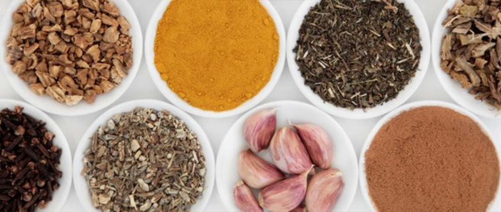
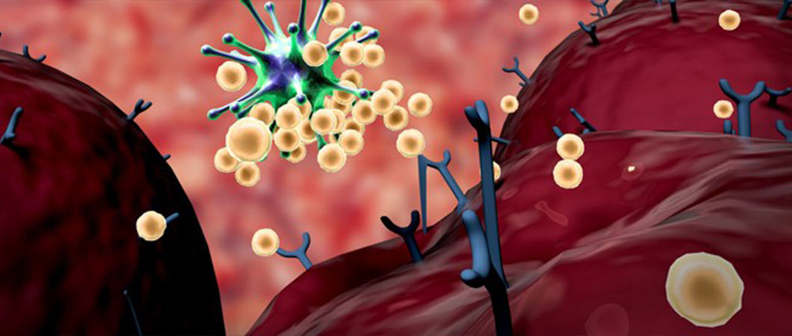

فيروس كورونا
بدأ فيروس كورونا بالإنتشار مع نهاية عام 2019 يعتبر فيروس كورونا سريع الإنتشار وينتقل عبر التلامس او الرذاذ الناتج عن السعال

نصائح طبية لتقوية جهاز المناعة وللوقاية من فيروس كورونا
جدول المحتويات
- تقوية المناعة ضد فيروس كورنا
- كيف يعمل جهاز المناعة في جسم الإنسان؟
- تقوية المناعة ضد الأنفلونزا
- تقوية جهاز المناعة بالأعشاب
- كيفية تقوية المناعة عند الكبار
- نظم غذائية لعلاج ضعف المناعة
- أسباب ضعف المناعة
- أضرار الكحول على الجسم
- عادات وأغذية تسبب ضعف المناعة
- ما هو فيروس كورونا؟
- بعد كم يوم تظهر أعراض كورونا؟
- ماهي أعراض الكورونا؟
- طرق الوقاية من فيروس كورونا
- نسبة الشفاء من فيروس كورونا
تقوية المناعة ضد فيروس كورنا
يمكن تقوية جهاز المناعة عن طريق عدد من العادات والأغذية الصحية، التي سنأتي على ذكرها في هذا المقال.
إقرا اكثر : أيهما أفضل لقاح كورونا أم المناعة الطبيعية؟
كيف يعمل جهاز المناعة في جسم الإنسان؟
عندما يستشعر الجسم المواد الغريبة (والتي تسمى عادة بالمستضدات)، يعمل الجهاز المناعي على التعرف على المستضدات، ثم يقوم بالتخلص منها.
تعمل الخلايا الليمفاوية على تكوين الأجسام المضادة. وترتبط هذه البروتينات المتخصصة بمستضدات محددة. حيث تبقى الأجسام المضادة في جسم الإنسان. وبهذه الطريقة إذا واجه الجهاز المناعي هذا المستضد مرة أخرى، فإن الأجسام المضادة مستعدة للقيام بعملها. هذا هو السبب في أن الشخص الذي يتعرض للإصابة بمرض ما، مثل جدري الماء فإنه عند الإصابة بالمرة الأولى فلا يمكن أن يصاب به الإنسان مرة أخرى.
تقوية المناعة ضد الأنفلونزا
تعد المناعة القوية في هذه الأيام ذات أهمية بالغة لصحة الإنسان أكثر من أي وقت مضى. ومن المهم جداً الحفاظ على جهازك المناعي وتقويته، حتى تتمكن من محاربة الفيروسات، والتي قد تتعرض للإصابة بها، ويتم ذلك من خلال:
- أخذ قسط كاف من النوم.
- ممارسة الرياضة بانتظام.
- تناول فيتامين C.
- الابتعاد عن التجمعات وعن الأشخاص المصابين.
تقوية جهاز المناعة بالأعشاب
فيما يخص تقوية جهاز المناعة وجد بعض الأطباء المتخصصين بعد قيامهم بعدد من الأبحاث العلمية أن المركبات الموجودة في الأعشاب والمكملات الغذائية، لها فوائد كبيرة في تعزيز جهاز المناعة في جسم الإنسان. ومن هذه الأعشاب مثلاً: الثوم، القتاد، الخرفيش، الجينسنغ، الشاي الأخضر، الكمون الأسود، وعرق السوس.

كيفية تقوية المناعة عند الكبار
مع تقدم عمر الإنسان تنخفض قدرة المناعة على الاستجابة، مما يساهم بدوره في المزيد من العدوى والأمراض. لذلك ينصح بالالتزام بالنصائح العامة التالية لتقوية المناعة:
- النظام الغذائي المتزن.
- الإكثار من الخضروات والفواكه.
- ممارسة الرياضة بشكل يومي ومنتظم.
- أخذ قسط كاف من النوم والراحة.
نظم غذائية لعلاج ضعف المناعة
هناك بعض الأطعمة الصحية التي من شأنها أن تساعد جسم الإنسان على الحفاظ على قوة جهاز المناعة. فإذا أردت أن تتمتع بجسم قوي مقاوم للأمراض كنزلات البرد والانفلونزا، فما عليك إلا تناول وجبات غذائية، متضمنة لعناصر تعمل على تقوية جهاز المناعة في جسمك، ومن هذه الأغذية الصحية:
- الحمضيات: كالبرتقال واليوسفي والليمون، حيث تساعد هذه الحمضيات في بناء جهاز المناعة لدى جسم الإنسان. ويعتقد أن فيتامين C يزيد من إنتاج خلايا الدم البيضاء. وهذه هي مفتاح مكافحة العدوى.
- الزبادي: يمكن أن يكون الزبادي أيضاً مصدراً رائعاً لفيتامين D، والذي بدوره يساعد في تنظيم جهاز المناعة، ويعتقد أنه يعزز دفاعات الجسم الطبيعية ضد الأمراض.
- السبانخ: ليست غنية بفيتامين C فقط. بل تعد مليئة بالعديد من مضادات الأكسدة وبيتاكاروتين، مما قد يزيد من قدرة أجهزة المناعة لدينا على مكافحة العدوى.
- الثوم: يبدو أن خصائص الثوم المعززة للمناعة تأتي من تركيز كثيف من المركبات المحتوية على الكبريت، مثل الأليسين.
- الزنجبيل: الزنجبيل هو عنصر آخر يلجأ إليه كثير من الناس بعد المرض. وقد يساعد الزنجبيل في تقليل الالتهاب، كالتهاب الحلق والأمراض الالتهابية الأخرى. وهو يعمل أيضاً على تقليل الغثيان.
- اللوز: كالمكسرات واللوز، وهي مليئة بالفيتامينات، وتحتوي أيضاً على الدهون الصحية. حيث إن نصف كوب من المكسرات التي تحتوي حوالي 46 لوزاً مقشراً، توفر ما يقرب من 100 % من الكمية الموصى بها يومياً من فيتامين E.
- الكركم: وهو يعتبر مضاداً جيداً للالتهاب.
أسباب ضعف المناعة
نتحدث هنا عن الأسباب المؤدية إلى ضعف الجهاز المناعي، حيث لا يقوى على مواجهة الأمراض من فيروسات وغيرها، وسنأتي على ذكرها بالعادات والأغذية المسببة لضعف المناعة لدى كبار السن.
سبب ضعف المناعة عند الكبار
مع تقدمك في العمر، تقل فعالية نظام المناعة أيضاً. وقد تحدث تغييرات الجهاز المناعي التالية:
- يصبح الجهاز المناعي أكثر بطئاً في الاستجابة. هذا يزيد من خطر الإصابة بالمرض. لقاحات الإنفلونزا أو اللقاحات الأخرى قد لا تعمل بشكل جيد أو لا تحميك طوال المدة المتوقعة.
- قد يتطور اضطراب في المناعة الذاتية. هذا مرض يهاجم فيه الجهاز المناعي أنسجة الجسم السليمة عن طريق الخطأ ويدمرها.
- قد يشفي جسمك ببطء أكثر. هناك عدد أقل من الخلايا المناعية في الجسم للشفاء.
- تنخفض أيضاً قدرة الجهاز المناعي على اكتشاف عيوب الخلايا وتصحيحها. يمكن أن يؤدي هذا إلى زيادة خطر الإصابة بالسرطان.
أضرار الكحول على الجسم
يقوم الكحول بتثبيط الجهاز المناعي في جسم الإنسان، لذا يفضل شربه باعتدال، أو حتى عدم شربه مطلقاً. يمكن للرجال تناول ما يصل إلى مشروبين كحوليين يومياً. ولا ينبغي للمرأة تناول أكثر من واحد. يتعلق أمر إمكانية تناول الكحول بعوامل أخرى، مثلاً الحالة الصحية العامة، وخطر الإصابة بمرض ما، أو أي أدوية قد يتناولها.
اسأل طبيبك عما إذا كان من الآمن تناول مشروب كحولي من حين لآخر، وإذا كان الأمر كذلك، فما هي الكمية الآمنة بالنسبة لك؟.
عادات وأغذية تسبب ضعف المناعة
الكثير من العادات والأغذية يمكن أن تؤثر أو تقوم بتضعيف جهاز المناعة، مثلاً:
- التدخين.
- عدم النوم بشكل كاف.
- تناول الأغذية الضارة، مثل الأطعمة الصناعية أو المعلبة أو الأطعمة التي تحتوي على نسبة عالية من السكر.
- قلة تناول الخضروات والفواكه.
- عدم ممارسة الرياضة أو ممارستها بشكل غير كاف.
- الضغط النفسي والتوتر.
ما هو فيروس كورونا؟
فيروس كورونا هي عائلة كبيرة من الفيروسات التي قد تسبب المرض للحيوانات أو البشر.
أما في البشر فمن المعروف أن العديد من فيروسات كورونا تسبب التهابات الجهاز التنفسي، والتي تتراوح من نزلات البرد إلى أمراض أكثر حدة، مثل متلازمة الشرق الأوسط التنفسية (ميرس)، ومتلازمة الجهاز التنفسي الحادة (سارز). وأحدث فيروسات كورونا المكتشفة حديثاً هو كوفيد – 19.
بعد كم يوم تظهر أعراض كورونا؟
"فترة الحضانة" هي الفترة التي تمتد بين التقاط الفيروس، وبدء ظهور أعراض كورونا. وتتراوح معظم تقديرات فترة الحضانة لـ كوفيد المستجد من 1-14 يوماً، والأكثر شيوعاً حوالي 5 أيام.
ماهي أعراض الكورونا؟
وفقاً لمنظمة الصحة العالمية، فإن الأعراض الأكثر شيوعاً لـ كوفيد 19، هي الحمى والتعب والسعال الجاف. وقد يعاني بعض المرضى أيضاً من سيلان الأنف، والتهاب الحلق، واحتقان الأنف، والآلام أو الإسهال.
طرق الوقاية من فيروس كورونا
- الحفاظ على النظافة العامة، وغسل اليدين بانتظام، ولمدة لا تقل عن 20 ثانية.
- الابتعاد لمسافة مناسبة عن الأشخاص الذين من حولك، 1 متر (3 أقدام) تقريباً.
- تجنب لمس الفم والأنف والعين.
- ممارسة عادات تنفس صحية: نقصد هنا تغطية الفم والأنف بالكوع أو منديل عند السعال أو العطس. ثم التخلص من المناديل المستخدمة فوراً.
- إذا شعرت بأي من الأعراض، مثل الحمى والسعال وصعوبة التنفس، فاطلب الرعاية الطبية مبكراً.
- الامتثال للأوامر الصادرة عن السلطات والمنظمات الصحية في البلاد، مثلاً عدم الاختلاط والحجر الصحي وغيره.

نسبة الشفاء من فيروس كورونا
يقول علماء الأوبئة إن معدلات الشفاء لـ كوفيد 19 لن تكون واضحة حتى انتهاء التفشي، ويمكنهم الاطلاع على مجموع البيانات كاملة.
حتى لحظة إعداد هذا المقال؛ فإن نسبة الوفاة كانت 4.34% من مجموع المصابين، ونسبة الشفاء من فيروس كورونا 28.82% من مجموع المصابين، فيما بقي 66.84% من مجموع المصابين بحالة تتدرج من الخطيرة الى الحالة الطفيفة.
لكن في الصين مصدر الفيروس؛ فإن نسبة الشفاء وصلت 87 %، ونسبة الوفاة 4%، بينما بقي 9% تحت العلاج.
الأسئلة الشائعة حول فيروس كورونا
هو فايروس تتضارب حوله الاخباروالتكهنات نظراً لأنه مستجد بدأ في وهان بالصين في ديسمبر 2019 هو كائن غير حي ضعيف البنية بالأصل مغلف بالبروتين ويتكون من حمض نووي RNA حيواني المصدريرجح أنه انتشر عن طريق الخفافيش او بنقولين ،كلمة كورونا هي كلمة لاتينية بمعنى التاج.
أعراض في البداية مشابهة للزكام والانفلونزا والأعراض الأكثر انتشاراً هي حرارة مرتفعة سعال ضيق نفس انهاك عام واخرى غير منتشرة مثل الام عضلية، غثيان، اسهال، فقدان لحاسة الشم، ألم في الرأس، ألم في الحلق.
التهاب الأنف التحسسي أو حساسية حبوب اللقاح من أعراضها العطس وحكة في الانف وانسداد في الأنف وإفرازات الأنف الزائدة، غير أنها مختلفة عن أعراض الكورونا من حيث الحدة حيث تكون الأعراض أشد لمصابي كورونا خاصة إذا تصاحبت مع التهاب رئوي.
بالنسبة للنظام في تركيا كما أعلنت وزارة الصحة الافضل هو التزام البيت والاتصال ب184 ويقوم فريق متخصص بإرشادك بالتصرف الصحيح إما اذا لم تستطع التواصل معهم فاتصل بالاسعاف على الرقم 112.وعلى الشخص المصاب الملتزم بالبيت عزل نفسه عن عائلته وخاصة كبار السن. حديثا أعلن وزير الصحة أنه يمكن للشخص المصاب أخذ جميع الاحتياطات ثم التواصل مع أقرب مركز صحي للتشخيص والكشف المبكر.
- التزام البيت إلا للضرورة. - الابتعاد عن الأماكن المكتظة مثل الماركت وتقصي أوقات يكون بها أقل اكتظاظاً. - التزام المسافة عن الناس من حولنا لا تقل عن مترين. - النظافة الشخصية غسل اليدين بالصابون أو الكولونيا بشكل دوري. - الكمامات عند الخروج فالكمامات تحميك من الإصابة وتحمي غيرك في حال كنت مصاب. - إذا اشتبهت بإصابة بكورونا حاول الوصول الى أقرب مركز طبي لأن التشخيص المبكر يرفع نسبة وسرعة التعافي ويقيك من المضاعفات.
التغذية المتزنة يجب أن يحصل الجسم على التغذية الكافية والحصول على كافة العناصر الغذائية. النوم الكافي وعدم إجهاد الجسم لأن إجهاد الجسم يضعف المناعة. ونحذر من تناول الفيتامينات دون مراجعة الطبيب ويعود ذلك لأن زيادة بعض الفيتامينات مثل فيتامين (د) مضرّة ويمكن أخذ الفيتامينات بالطرق الطبيعية مثل الفواكه الحمضية بالنسبة لفيتامين سي.
تختلف حدة الاصابة وخطورتها حسب المكان وحسب عوامل ومعطيات عدة. تتم إصابة الشخص بفيروس كورونا من رذاذ شخص آخر مصاب عن طريق الفم أو الأنف أو العين ينتقل إلى الحلق ويسبب آلام في الحلق ثم يكمل إلى القصبة الهوائية أو مجرى الهواء حتى يصل إلى نسيج الرئة وهنا يكمن خطر هذا الفيروس حيث إنه يتسبب بــالتهاب الرئوي مماينتج عنه ضيق التنفس صعوبة النفس وسرعة النفس.
تختلف احتمالية الوفاة حسب عوامل ومعطيات عدة وحسب المكان النسبة بشكل عام 5% وفي بعض البلاد النسبة أكبر. بالنسبة للوفيات فإن كثير من المصابين يتم نقلهم إلى العناية المركزة وهناك يتبين إصابتهم بمتلازمة الضائقة التنفسية الحادة وهو ما يجعل الأعراض أكثر حدة والحالة أكثر استعصاءً وهو مايزيد احتمالية الوفاة. وتظهر احتمالة الوفاة بشكل أكبر لدى كبار السن خصوصاً من لديه أمراض مزمنة أما من هم أصغر سناً فإنهم يتعافون في الغالب.
لا يوجد علاج 100% ولكن توجد أدوية استخدمت لعلاج أمراض أخرى تقريباً 5-6 أدوية معتمدة من وزارة الصحة التركية: "هيدوركسي كلوروكين" يستخدم في علاج الملاريا يعتقد أنه يبطء المرض. مضدات الفيروسات "أوسيلتاميفير" يعطى بالعادة لمرضى الانفلونزا يوصف في حال الاشتباه باصابة المريض بالكورونا في حال تحسنت الحالة فإن المريض يعاني من انفلونزا وفي حال لم تتغير الحالة فإن المريض مصاب بالكورونا. لوبينافير/ريتونافير تستخدم في حال لم ينجح دواء الـ"أوسيلتاميفير". فافيبيرافير وقد اشتهر على مواقع التواصل الاجتماعي على أنه العلاج الذي أتى من الصين وهو ليس علاج للكورونا ولكن استخدم قبل ذلك لعلاج فيروسات أخرى وبدأت دول كثيرة حول العالم بما فيها تركيا تستخدمه في العناية المركزة.
الأمر يعتمد على المناعة فهي عند الشباب أقوى لذلك الأعراض أخف لكن لا يعني هذا أنهم بمأمن من الإصابة وخاصة أن التدخين منتشر بين الشباب بشكل كبير ونوه الدكتور إلى أن هناك وفيات بين الشباب أيضاً لذلك لا يجب الاستهانة بالفيروس وبإجراءات الوقاية. بينما في كبار السن تكون المناعة أضعف مع وجود أمراض مزمنة وهو ما يؤدي الى احتمالية أكبر للوفاة.
يمكن أن يصاب الجميع من كافة الأعمار ويبدو أن كبار السن والأشخاص الذين يعانون من حالات طبية موجودة مسبقاً (مثل الربو والسكري وأمراض القلب) أكثر عرضة للإصابة بالفيروس. وبحسب اجراء الفيلياسيون فإن الأشخاص الذين كانوا على تواصل مع أشخاص مصابين هم أكثر عرضة للإصابة وهذا يفسر سبب ارتفاع حالات الإصابة بين الفحوصات التي تجريها الدولة بشكل يومي والذي بدأ ينخفض تدريجياً.
اجاب الدكتور بأن الدخان يؤثر على الأهداب وخلايا المجري التنفسي التي تقوم بحماية المجرى التنفسي من المواد الغريبة فالتدخين يضر بهذه الخلايا فتكون حدة وقوة المرض أكبر.
الربو هو التهاب مزمن لمجرى الهواء أو القصبة الهوائية عادة ما يشخص في الطفولة يعتمد علاج الربو على مادة الكورتيزول البخاخ أو الحبوب في الحالات المستعصية لكن حبوب الكورتيزول تضعف المناعة لذلك ينصح الطبيب بالابتعاد عنها بالفترة الحالية إلا للضرورة.
كان يعتقد أن الأعراض ستكون أخف في حال أصيب مريض الانفلونزا بفيروس كورونا نتيجة لفعالية وجهازية الجهاز المناعي لكن تبين عكس ذلك تماماً حيث إنها تزيد حدة المرض وتعرض الحياة للخطر.
شاهد الآن أولاً بأول: خريطة انتشار كورونا حول العالم وأعداد الاصابات
المصدر: الأناضول , منظمة الصحة العالمية , اعراض فيروس كورونا , خطر فيروس كورونا
اطلع على أحدث المنشورات والأخبار الطبية
عمليات شفط الدهون بالفيزر في تركيا والأسعار 2021
يعتبر شفط الدهون بالفيزر من أفضل عمليات علاج السمنة المفرطة. تعرف معنا على مميزات وعيوب شفط الدهون بالفيزر وكيف تتم العملية وشاهد الفرق قبل وبعد في تركيا.
طرق علاج طول النظر في تركيا وأحدث التقنيات
يعاني الكثير من كبار السن وحتى البالغين من مرض طول النظر . سنتحدث في هذا المقال عن كيفية علاج طول النظر وأسباب هذا المرض ونسبة نجاح العلاج .
الفرق بين زراعة الشعر في ايران وتركيا 2021
بالرغم من أن أسعار زراعة الشعر بين تركيا وايران لا تختلف كثيرا إلا أن هنالك الكثير من الفروق التي قد تحدد لك الدولة الأفضل لزراعة الشعر فيها.
طرق علاج قصر النظر في تركيا وأحدث التقنيات
يعاني الكثير من الأطفال وحتى البالغين من مرض قصر النظر. سنتعرف في هذا المقال على أفضل طرق علاج قصر النظر وأسباب هذا المرض ونسبة نجاح العلاج .